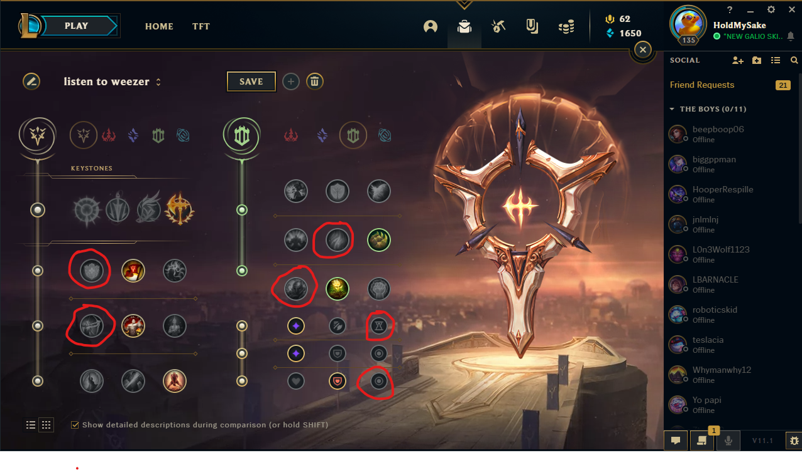
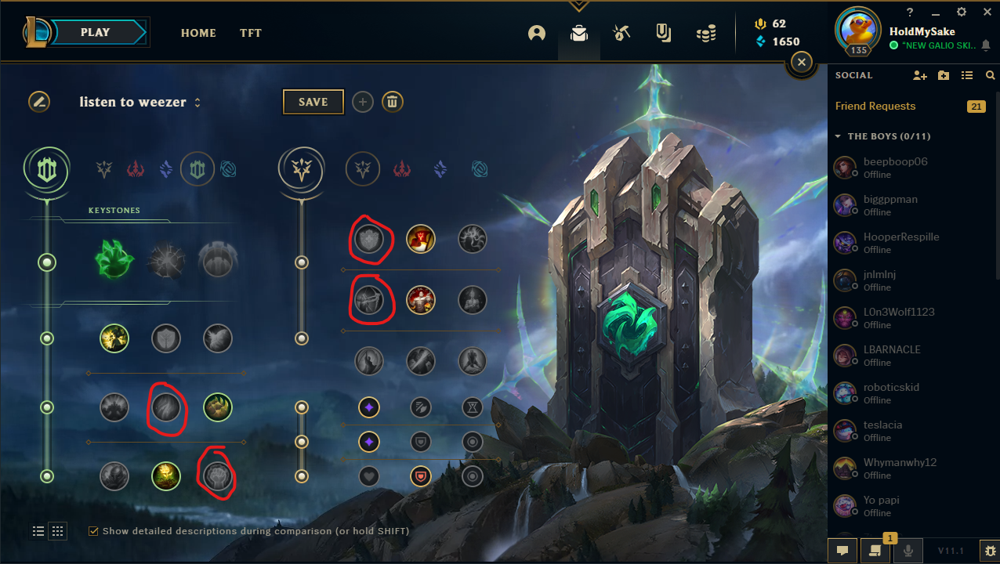
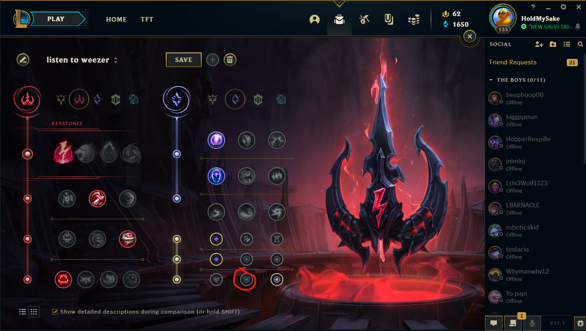
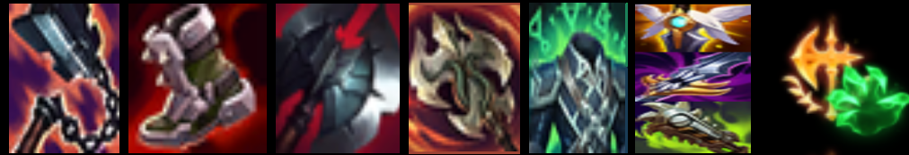
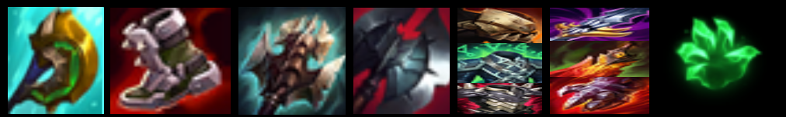
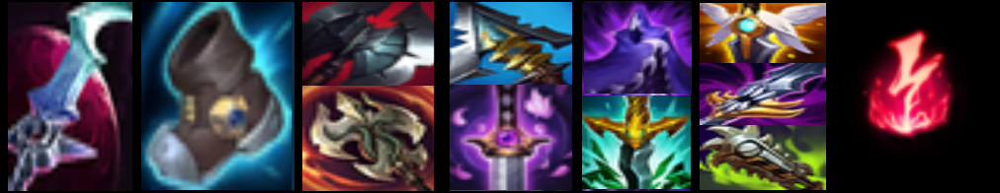

Now let's talk runes and build. I have 3 main rune pages I like to take shown below. The encircled runes are alternate options depending on matchup. Below them are sample builds depending on rune choice.
|  |  |  |
| This is the best rune page to take in most games. Conqueror makes you an absolute teamfight beast, and when fully stacked, you're basically unstoppable. It's made even better by the fact that Goredrinker exists allowing you to stack this even faster. | This is another good page to take into melee matchups. Grasp + Divine Sunderer + Passive can deal some big damage and big healing. This rune is more for the laning phase rather than teamfights. So here you stomp the lane and then just splitpush. | If you wanna go to the mid lane on Aatrox, however, take this page. This is more of an assassin Aatrox playstyle. You're a glass cannon but you also sustain quite a bit because Aatrox. It's kind of fun but I wouldn't play it in ranked. |
|  |  |  |